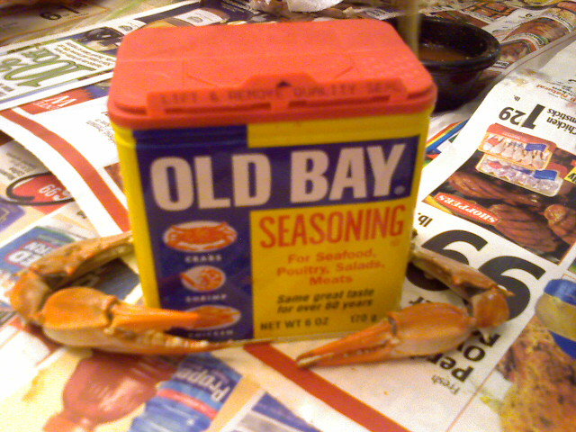
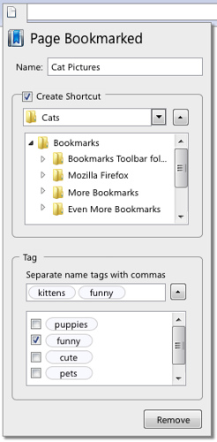
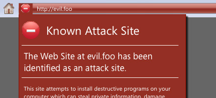

Homeward Bound
No car at the moment so I’m stuck riding the metro from College Park to Glenmont.

No car at the moment so I’m stuck riding the metro from College Park to Glenmont.
We are a good year and a half away from the 2008 United States Presidential Election but people are getting all worked up about the political season. Deciding who to stand behind used to be a rather complex task of researching a candidate and deciphering their message to see if they are for or against a certain issue. Luckily there are lots of people using the Internet to make it a cinch for you to pick.
At DEHP.net/candidate you can choose if you are for or against various issues including abortion rights, Iraq, net neutrality, same-sex marriage, universal healthcare etc. and how important that issue is to you. It will then spit out the rankings of the candidates that are the best match for you including the issues they disagree with you. Here is how I stacked up:
Kucinich 55
No Child Left Behind
Obama 40
Patriot Act, Same-Sex Marriage
Edwards 39
No Child Left Behind, Patriot Act, Iran – Military Action, Same-Sex Marriage
Clinton 39
No Child Left Behind, Patriot Act, Iran – Military Action, Same-Sex Marriage
Dodd 35
No Child Left Behind, Patriot Act, Iran – Military Action
Biden 34
No Child Left Behind, Patriot Act, Same-Sex Marriage
Gravel 33
(you have no disagreements with this candidate)
Richardson 33
Assault Weapons Ban, Patriot Act, Iran – Military Action, Same-Sex Marriage
McCain -8
Giuliani -12
Paul -12
Thompson -14
Cox -23
Huckabee -28
Brownback -37
Romney -38
Tancredo -48
Hunter -50
As you can see Dennis Kucinich is the best match for my views with Barack Obama, John Edwards, and Hillary Clinton right behind. All of the data was collected from www.2decide.com/table.htm, which gives a great overview of all the candidates.
Now that only took me 15 minutes including writing up this blog entry.

I hear Old Bay with crabs is a big Maryland thing. I wouldn’t know since I don’t eat seafood.
Phishing can be tricky stuff with only the smallest of details being out of place. Would you recognize a fake site when you visited one? McAfee lets you find the answer without putting yourself at risk with this 10 question quiz. Can you pick the authentic site?


I got 9 right out of 10 and you wouldn’t believe the site I got wrong.
Sometimes I just like to look for random domain names at DomainsBot.com. Here is what I came up with…
CyborgSuperHuman.com or SuperHumanCyborg.com – For those ultra powerful hybrid humans that probably blog. SuperHumanCyborg.org is pretty funny too.
GordPorn.com – For some hot gord on gord action.
SnowPow.com – Like snowplow but hipper!
OuterRouter.com – For those far out Internet switches.
Hunged.com or Hungd.com – Hunged sounds like a cool company name.
iWillVomit.com – Just so you know…
Dizmizz.com – Hipster version of dismiss.
Techsie.com – A tech site for girls.
Loooong.com – extra emphasis on the oooong.
733tr.com – Like Flickr for the leet.
PinkPoop.com – No one will easily forget you with this one.
Hooray! Everyones favorite open-source browser will keep on innovating with an overhaul to the bookmark feature, improved security awareness, and finally a consistent method to handle various MIME types.


See more at Techdo.com
Twitter is a site that consists of people sharing their thoughts in 160 characters or less over a wide variety of mediums. So what is the appeal of reading a bunch of short, random thoughts? Wired’s Clive Thompson describes it best as a 6th sense:
Individually, most Twitter messages are stupefyingly trivial. But the true value of Twitter — and the similarly mundane Dodgeball, a tool for reporting your real-time location to friends — is cumulative…
…It’s practically collectivist — you’re creating a shared understanding larger than yourself.
By following the short messages of my friends I can tell what they are up to without even asking. That way when we meet up in the physical world I know what they’ve been up to and I have something to start the conversation off with.
If you are still confused you will just have to try it out to get it. You can follow me at twitter.com/kingkool68.
I started to get back into the swing of things this week. Last night I did 30 minutes of Wii boxing to work the upper body and 12 minutes on the exercise bike today. I’m at 209.0 which is creeping up to the dreaded 210 that I have been striving to stay under. Those cookies and ice cream at a going away party at work today probably didn’t help.
Here is a little trick. Think of someone famous whom you consider successful. Now I bet the first letter of their last name is in the first half of the alphabet. Was I right?
According to a surname study by Richard Wiseman of The Daily Telegraph, success has a higher chance for those in the first half of the alphabet rather than the latter half. Polling readers Daily telegraph readers, Wiseman asked respondents were asked for their sex, age, surname and rate how successful they had been in various aspects of their life, such as their health, finances, career, and “life in general”. According to his data, the people whose last names begin with A,B,C… rated themselves more successful than those with …X,Y,Z last names.

One theory offered to explain this phenomenon is due to the way we arrange names in a list. In school, lists of students would usually be sorted in alphabetical order based on the surname. Those with last names higher on the list are generally picked first leaving the people lower on the list to be picked last. This may not seem like such a big deal until you consider this short coming spread out over the entire life of the person. When we put this into the perspective of a lifetime it is easy to see how the last half of the alphabet people can be stuck with a lack of confidence. Apparently where we are on the last name list has an impact on how we see ourselves.
This isn’t an absolute rule however, just look at Steve Wozniak, co-founder of Apple. There is also Shaquille O’Neil, Tiger Woods, Oprah Winfrey among others. So don’t despair N-Z last namers, there is still hope you will reach success. You guys just have a slight statistical disadvantage. Sorry.